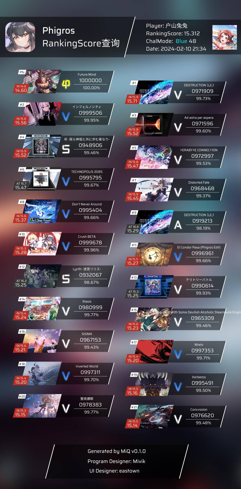
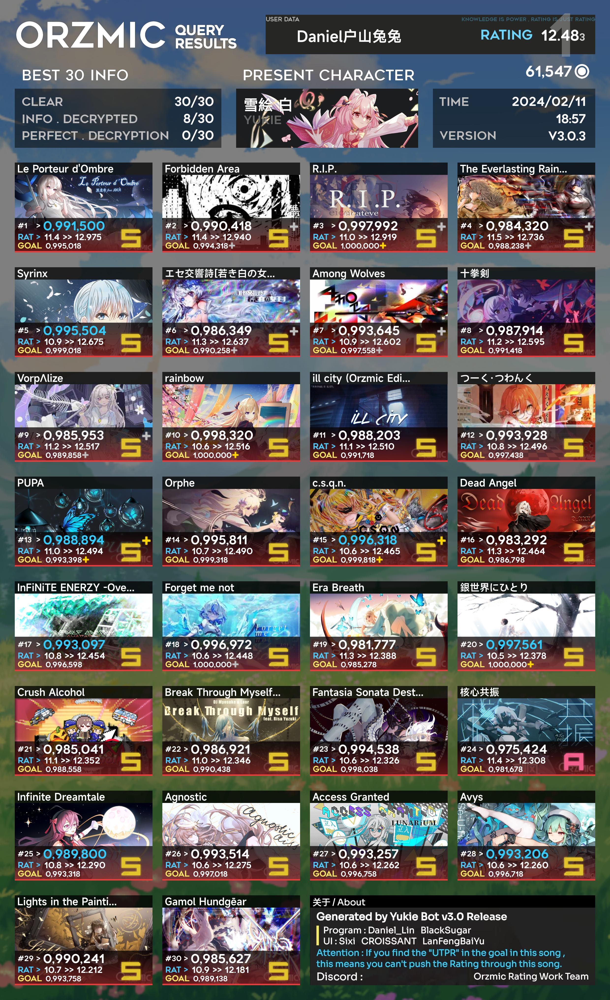
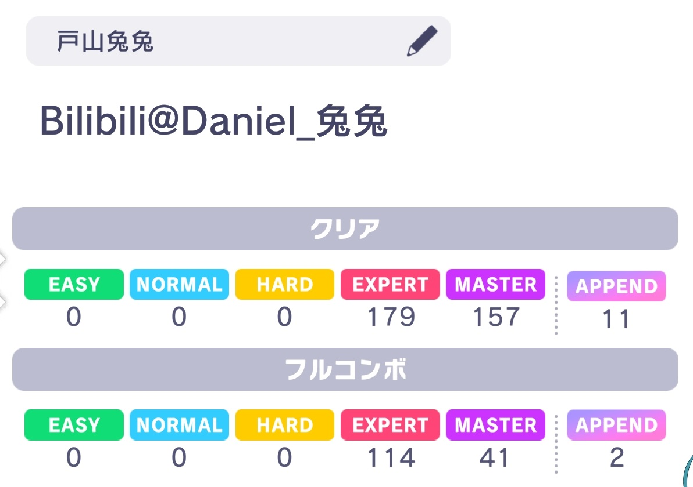
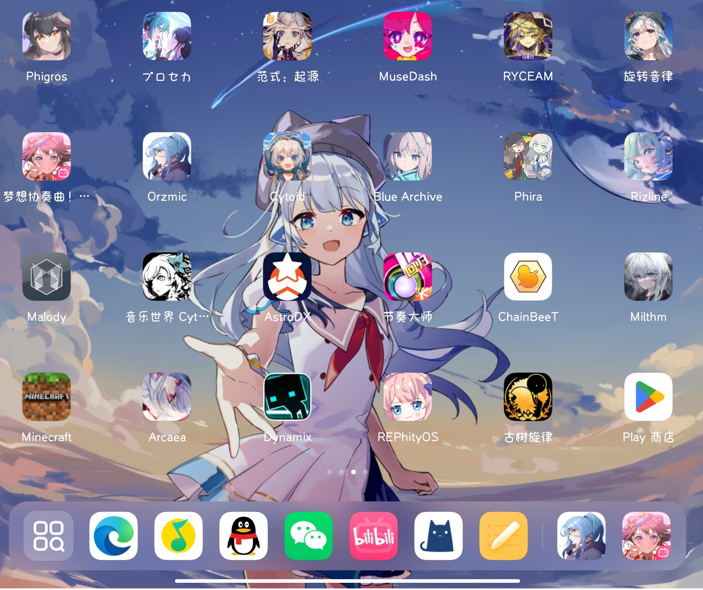

关于兔兔
欢迎你的来访！我是户山兔兔！音游人/技术爱好者/二次元
音游人
Phigros15.3/Orzmic12.49/Malody5Dan/Rotaeno14.7
其实是基本上什么音游都玩，板子上面满满一页都是音游。曾经被朋友安利了音游，然后因为享受节奏的感觉成为了高浓度的音游人。




主要玩的音游其实就几个，不过有了其他的新音游也会第一时间去体验
技术爱好者
小时候就痴迷于电脑和各种电子设备。
高中时候为了能和群友们开好mcbe服务器学会了nodejs的基本编写，能够写简单的JavaScript代码，也以此为机缘了解了QQ机器人的开发。
经手了mc基岩机器人框架Sparkbridge的开发,也为热爱的Bangdream开发过Ksmbot机器人（仍在维护）
目前主持Yukie雪绘Bot-Orzmic查分机器人的主要开发，开发过程中受益匪浅，学到不少东西。（我也是对音游圈有点影响的人了吧）
希望能够保持着对新事物的好奇心和探索吧。
二次元
被网友拉去看番，从此一发不可收拾（x
看过番其实屈指可数，没有什么时间去看（（（
更多的时候是音游的二次元浓度比较高，或者说玩玩ba这样的二游，听动漫的歌曲。
更多的...
我本身的话，其实也算是乐观外向的人吧(嗯
去到哪里都喜欢和人搭话，被称为“社交恐怖分子”
喜欢交朋友，自来熟
这就是兔兔哦，也希望和你成为朋友哦~~